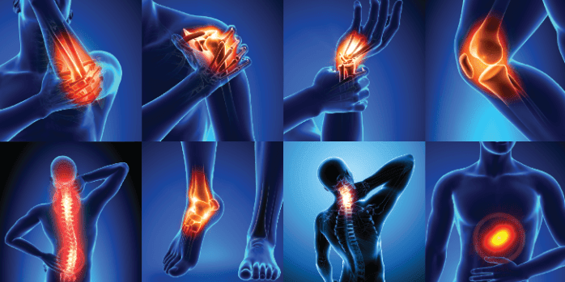
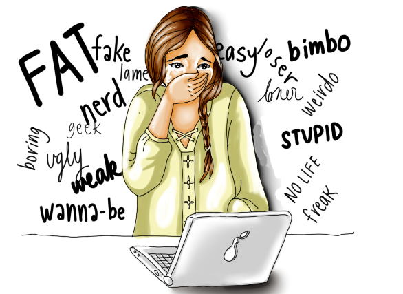

How TECHNOLOGY has Affected our daily life
The society we live in today is based on technology that people have developed over thousands of
years. The rapid advancement of technology has rendered life practically different from what
it was even a century ago. We are totally dependent on the technology we have. This reliance
isn't just about your inability to put down your phone for more than a few moments; it's
about the many technologies that probably take for granted that may have saved ones life or
enabled ones current life without even realizing it.
Technology will only improve, and because new technology is so productive, it will
only
evolve at an even faster pace. Throughout history, the human species has leaned on technology
for survival, so resting or slowing down is just not an option. Technology must evolve, and it will
continue to evolve at an ever-increasing rate to meet today's challenges. Some of the gifts
of the technology are as follows:
- Social Medias
- Websites
- Gadgets etc...
Positive affects of Technology
Evertyhing has both positive and negative parts. As technology helps us to do our works in easy way in very less time it is the best part of the technology. some of the positive aspects of the technology are:
- Connecting Worlds
- Education
- Business
Technology is really helping to connect the World. Social medias are the best gift of technology. The term "social media" refers to the means by which people interact in virtual communities and networks by creating, sharing, and exchanging information and ideas.It has helped us to share our feelings, communicate with other people far from us. Previously it was very difficult to communicate to the people far from us. Also it was very costly. But now after the Internet and gadgets, we can have realtime talks face to face in very cheap cost.
Technology has really helped in education sector. It as gives access to free education to
million of students. We can get knowledge on any topic on Google and Youtube . To conduct research before
the Internet, you would have to visit a library. Even so, there's a chance the library
didn't have the books you required.
Then you'd have to go to the library and request the books, which could take some time.
Research was time-consuming and inconvenient. You may get information on any topic you can
think of using the Internet.
You'll have no issue locating various sources to double-check the accuracy of the
information you get.Many people who would like to further their education are unable to do
so because they are employed, caring for families, or live too far away from their local
institution to travel. All of that has altered thanks to online programs. Students can now
enroll in online programs or take single classes at their leisure, without having to leave
their homes. Also at the time of COVID-19 technology have contributed a lot in
education sector. Due to technology only the education of millions of students was not
hampered.
We live in a capitalist society, which means that many new technological advancements are
driven by businesses wanting to improve their products/services or their capacity to market
those products/services.
Over time, new technology has arisen with the goal of making corporate processes more
efficient and successful.
Transactions are far simpler and more efficient now
than they were previously. On the consumer side, innovations such as the credit card and the
rise of e-commerce have made it easier than ever for companies to sell items and
services to customers when and when they want them.
On a Business - to - business
level, however, transactions are significantly easier on a large scale. Companies buying
components for their goods, for example, would frequently have to wait days for funds to
clear, especially if the component's manufacturer was located overseas.
Negative Affects of Technology
Along with lots of positive sides, technology have a lot of negative affects too. Due to technology world has been progressive for progressive ones and cruel for the ones who cannot take the advantages of the technology in the right way. Some of the Negative affects of the technology are:
- Psychological Problems
- Physical Problems
- Environmental Problems
- Social Problems
Although social media and other technologies are supposed to bring people together, but they
may have the opposite impact in some circumstances.
 According to a 2017 research of young adults aged 19-32, individuals who used social
media more frequently were more than three times as likely to feel socially isolated
as those who did not.
According to a 2017 research of young adults aged 19-32, individuals who used social
media more frequently were more than three times as likely to feel socially isolated
as those who did not.
Finding strategies to limit social media use, such as putting time limitations on
social apps, may help some people feel less isolated. Also the people with high time in
social medias are likely to suffer from depression and anxiety. They would
compare themselves to high profile and act themselves like others.
Similarly, in the recent times various games have affected the mental health of
the childrens. People of young age have started to invest more time on social medias and
games rather than building themselves to be the good citizen and the person. In this rate,
there will be severe problem of unemployment and other social problems.
Excessive use of technology also causes various physical problems to a person. Using social
medias and other screen time gadgets causes various eye problems.
Handheld tablets, cellphones, and computers, for example, can hold a person's attention for
long periods of time. This may lead to eyestrain.
Blurred vision and dry eyes are two common symptoms of digital eyestrain. Eye strain
can cause pain in other parts of the body, including the head, neck, and shoulders.
Not
only Problems in eyes, due to light emitting gadgets we may have sleep problems too. Using
technology too close to bedtime can lead to sleep problems. Blue light, such as that
from cell phones, e-readers, and laptops, stimulates the brain, which causes this effect.

According to a research study, this blue light is enough to disrupt the body's natural
circadian cycle. This disruption may make it difficult to fall asleep or cause a
person to be less attentive the next day.
People should avoid using electronic gadgets that emit blue light an hour or two before
night to avoid the potential effects of blue light on the brain.
Reading a book, doing easy stretches, or taking a bath are examples of moderate
activities to relax with instead.
Apart from eye problems and sleepliness, excessive use
of technology also causes various physical problems. As we go on using more technologies we
forget to maintain body posture while adjsuting our body to be comfortable to sit.
This causes various body problems and bodyache. Also while using technology for every small
tasks, we become physically incative, which makes us physically weak and also varous
health problems like diabetes, obesity, cardiovascular diseases and
premature death is caused.
The industrial revolution brought along plenty of new technologies with immense potential.
Between around 1760 and 1840, Europe and the United States experienced a transition to new
manufacturing processes. This has been followed by continued industrialization and
technical
vehicles and other machinbreakthroughs in industrialized countries around the world, with
the environmental consequence of this technology including the exploitation and destruction
of our natural environment.
These technologies have damaged our world in two main ways; pollution and the
depletion of natural resources. Due to various inventions in the technology like
ary parts, severe air pollution is caused. The gases emmitted form these machinary
parts is causing air pollution in high amount and also golbal warming and climate
change is caused. Due to the excessive use of technology other types of pollution like water
polution, sound pollution etc... are also caused.
Various social problems are caused by trchnology. One of the common social problem caused by
technology is hacking and
data breaching. As technologies like social medias and gaming are causing mental health
problems in the people, social crimes are also being increased day by day. Youths are being
misguided
to wrong path. Defamation, Identity Theft and Cyber bullying are other
social problems caused by technology.
The internet and computers have also made it
simpler for bitter people to
target those they know directly as well as complete strangers via online platforms.
This has resulted in significant cyberbullying
instances involving both children and adults, with terrible consequences in some cases. The
issue with these methods is that they tend to fly under the radar even more than typical
bullying, making them more difficult to detect and address.
Summary
Lastly, we can conclude that technology is beneficial when able to use in right way but very harmful when not being able to handle. It is like a cartoon of Glass which should be handled properly. If we handle the box of glass properly, then we can enjoy our drinks and if we are unable to handle that box then we end up hurting ourselves. For the better use of technology we should encourage youths to get involved in social activities rather than getting engaged in social medias all the times. Sport activities should be promoted for physical and mental health of the people. Youths should be encouraged to make less friends from society rather hundreds of e-Friends.